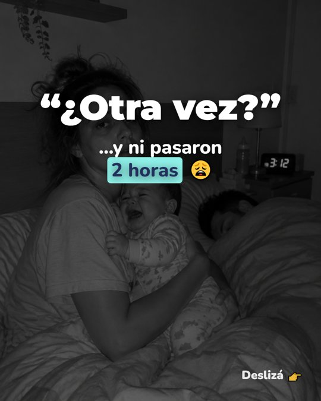
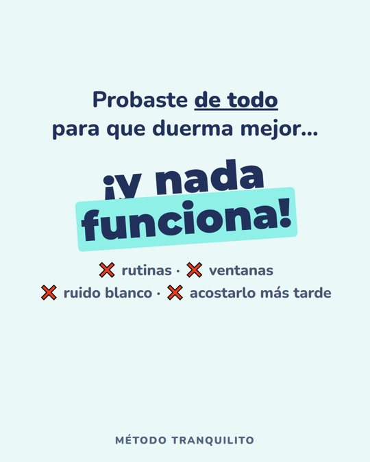
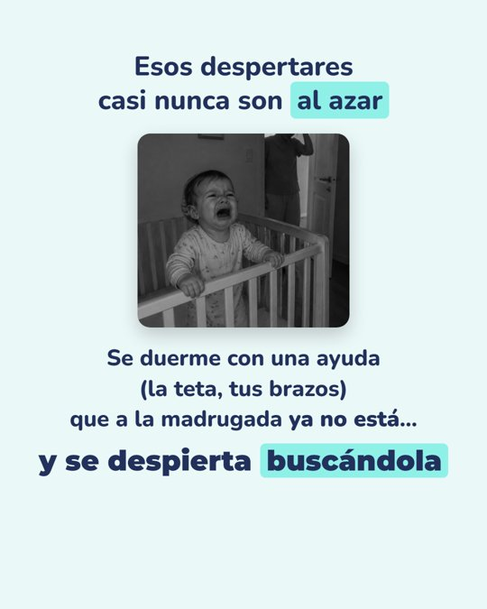
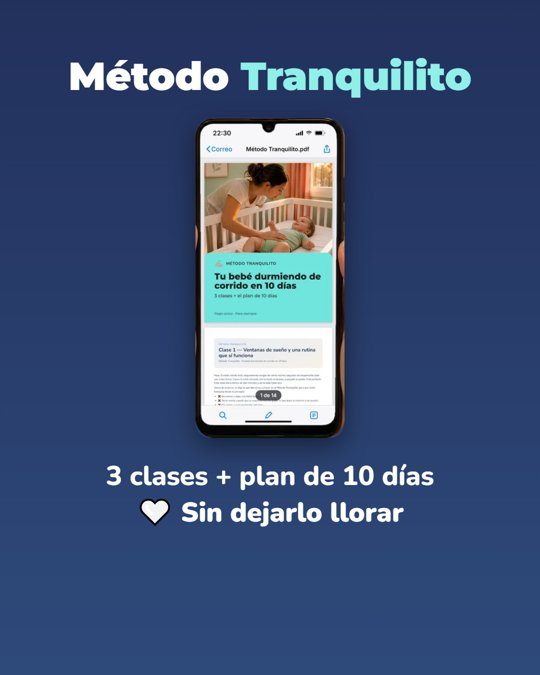
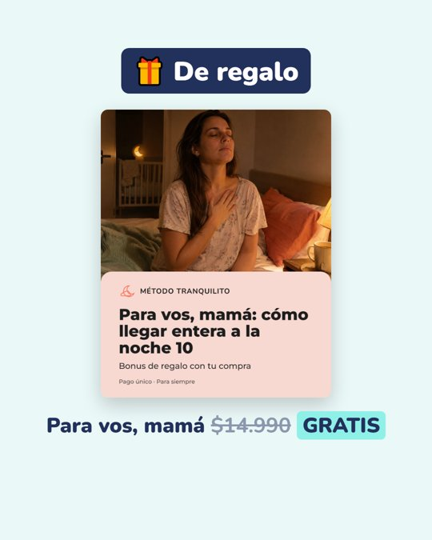
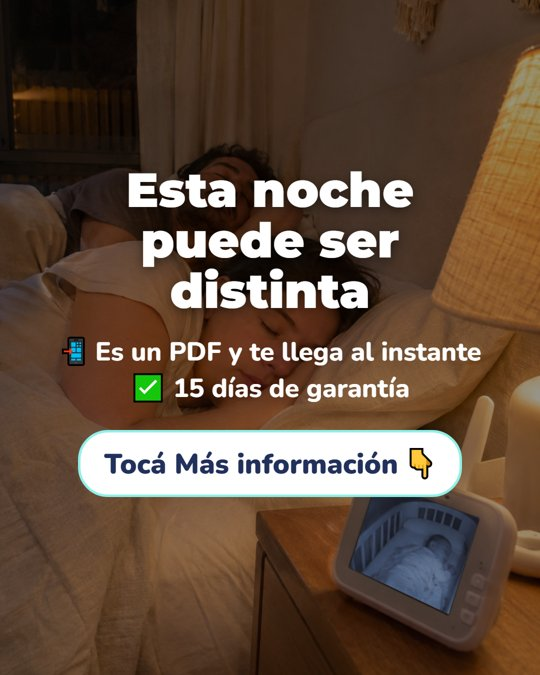
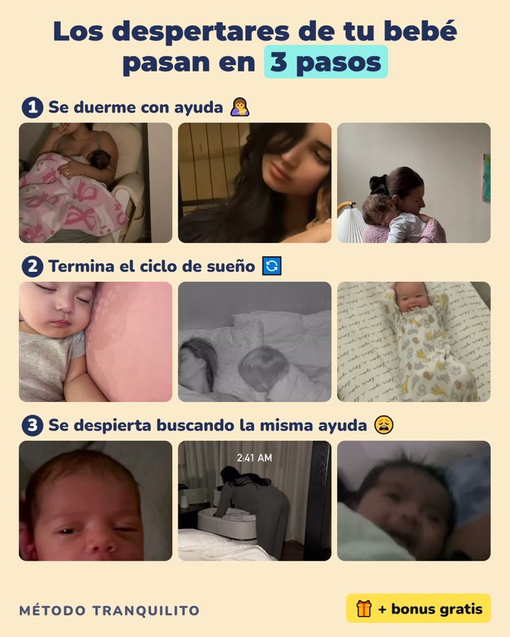

Del lunes 16-11 a la tarde al miércoles 18-11 a la noche
Sigue al informe anterior (14-11 → 16-11 18:00). Fecha de corte: miércoles 18-11, 18:45 (hora de Argentina).
En 30 segundos
Una venta más, la 4ª: martes 17-11 a la noche, y con el primer producto extra del carrito vendido (cobró $26.980 en vez de $18.990).
Test 2 terminado con la regla de corte: los 5 anuncios apagados. 2 vendieron una vez cada uno, ninguno hizo la segunda.
Diagnóstico: los anuncios funcionan; lo que falla es la primera pantalla de la página de venta. De cada 100 visitas compra 1,5 y necesitamos más de 3 para ganar plata.
Oferta más fuerte: se sumó un regalo, "Para vos, mamá", y la página se rearmó como la marca brasileña que más vende.
Test 3 prendido hoy a las 18:36: 5 anuncios nuevos, cada uno copiado de un ángulo que hace meses vende afuera.
Metas con fecha y la primera semana de orgánico ya programada.
4ventas reales desde el arranque
~USD 116gastado en Meta (Test 1 + Test 2)
1,5 %de las visitas compra (vara: 2 %; para ganar: ~3,4 %)
~USD 29costo por venta (deja ~USD 13)
Lectura honesta: todavía se gasta más de lo que entra. Pero ahora sabemos dónde está el problema. Los anuncios hacen su trabajo (paran el scroll y traen gente con interés); la página es la que no convence lo suficiente en los primeros segundos. Eso se arregla de a un cambio por vez y midiendo.
1. Test 2: cómo terminó
Las ventas se cuentan en la tienda (Utmify e Impultienda), no en Meta. Meta, por ejemplo, no le adjudicó la venta del martes a ningún anuncio, y en la tienda se ve clarito que vino del meme.
Anuncio
Gastado
Ventas reales
Por qué se apagó
Placa "dejarlo llorar" (foto nueva)
USD 11,14
0
Apagado
USD 10 sin venta (miér 09:20)
Video "despertares"
USD 10,20
0
Apagado
USD 10 sin venta (miér 12:45)
Video "no es la ventana"
USD 11,80
0
Apagado
USD 10 sin venta (miér 09:20)
Video "Si tu bebé…"
USD 13,17
1
Apagado
Llegó a USD 13 sin la segunda venta (miér 15:42)
Meme "despertares" (carrusel)
USD 13,02
1
Apagado
Llegó a USD 13 sin la segunda venta (miér 16:34)
Total Test 2
USD 59,33
2
Tres cortes salieron con USD 1 a 2 de más porque la revisión automática no estaba programada a tiempo. Ya quedó corregido para el Test 3: revisa cada 20 minutos.
La venta del martes 17-11 a las 21:44
Del meme "despertares", visto en el feed de Instagram. Pagó con Mercado Pago.
Sumó el extra del carrito "Que no se despierte a las 5" ($7.990). Es la primera vez que alguien lo agrega.
2. El diagnóstico: dónde se pierde la venta
Revisamos el camino completo en el orden que enseña la escuela. Se mira paso por paso y se arregla el primero que falla:
Paso
Cómo estamos
1. ¿El anuncio frena el scroll y se mira?
Gancho y retención dentro de la vara
Bien
2. ¿Los que tocan llegan a la página?
75 % a 92 % (vara: 65 %)
Bien
3. ¿Cuánto cuesta mostrar el anuncio?
USD 5 a 8 cada mil vistas
Bien
4. ¿La página convence?
1,5 % compra (vara: 2 %; la meta es 3 a 6 %)
Acá falla
5. ¿El pago anda?
De los que van a pagar, 1 de cada 4 compra
Bien
Entre 5 y 8 de cada 10 se van en la primera pantalla, en los 10 anuncios por igual. Por eso el problema es la página y no un anuncio en particular.
Las que compraron decidieron arriba: vieron el precio y fueron directo a pagar, sin leer toda la página.
Una corrección de nuestra parte: el martes parecía que mucha gente iba a pagar, pero eran nuestras propias pruebas. Sacándolas, el dato real es más bajo. Por eso de ahora en más se mide sin nuestras sesiones.
Error de proceso: entre el 12 y el 17-11 la página se cambió más de 20 veces. La escuela pide 48 horas por cada cambio para poder saber qué funcionó, así que la página queda quieta hasta el jueves 19-11 a las 04:00. Ahí se mide y se hace UN cambio en la primera pantalla.
3. Qué se hizo, día por día
Lunes 16-11 (tarde y noche): metas, orgánico y regalo
Metas con fecha:
22-11: primer anuncio con 2 ventas o más a menos de USD 10 cada una.
29-11: 3 anuncios ganadores y un día sin perder plata.
06-12: USD 100 por día de inversión.
~15-12: segundo país.
31-12: USD 500 por día de ganancia.
16-01-2027: USD 1.500 por día.
Se revisa cada domingo.
Orgánico, semana 1 programada en Instagram y Facebook a la vez: 14 reels y 7 carruseles, del lunes 16 a las 21:30 al lunes 23. Cada publicación quedó confirmada en el planificador de Meta. La semana siguiente se programa sola cada domingo.
Regalo dentro de la oferta: "Para vos, mamá — cómo llegar entera a la noche 10" (valor $14.990, gratis). Va adentro del PDF principal.
Antes"De $59.990 a $18.990", sin regalos.
Ahora"De $74.980 a $18.990" (el método más el regalo), con la tarjeta del regalo debajo del precio y un renglón "Incluye de regalo" en la página de pago.
Martes 17-11 (madrugada): la página de venta, rearmada
Tomamos como modelo a Sosseguinho, la marca brasileña que lleva más de 270 días vendiendo esto.
Un botón arriba de todo que va directo a pagar, como en la marca brasileña. En total hay 4 botones en la página.
Precio tachado y cuotas en todos los lugares donde aparece el precio.
Primera pantalla con foto (la misma mamá con su bebé) y un fondo turquesa que se va aclarando. Se sacó el recuadro de "dolor".
Más rápida: la foto de arriba carga en 3,0 segundos (antes, 4,6).
Resultado del primer día: casi la misma cantidad de gente se iba en la primera pantalla. Es justamente lo que se va a atacar el jueves.
Miércoles 18-11: cortes, diagnóstico y Test 3
Durante el día se apagaron los 5 anuncios del Test 2 con la regla automática (tabla del punto 1).
Utmify (la herramienta que cuenta las ventas reales) llegó al tope de 30 ventas del plan gratis y dejó de contar. Se pasó al plan pago de USD 29 por mes, que cuenta hasta 1.000 ventas por mes y deja conectar 3 cuentas de anuncios.
Diagnóstico completo (punto 2).
Test 3: se armó el criterio con las reglas de la escuela, se buscaron ángulos que pasen la "regla de 3", se produjeron las 5 piezas y quedaron prendidas a las 18:36 (punto 4).
4. Test 3: las 5 piezas que corren desde hoy
Cómo se eligieron:
4 ángulos nuevos y 1 variación de un anuncio que ya vendió. La escuela pide que la mayoría sean nuevos cuando todavía no hay un ganador.
Los ángulos se buscaron por marca: de 7 marcas que hace meses venden esto con muchos anuncios prendidos, pasaron la regla de 3 (3 marcas o más, 14 días o más) "el precio en el gancho" y "no es una fase".
El resto sale de lo que vende hace meses en Sosseguinho y Soy Esa Mamá.
Edición nueva:
título que entra y se va;
subtítulos tipo karaoke;
sonidos en las palabras clave;
la tapa del método que se mueve cuando se nombra;
el regalo que se abre;
un cierre distinto en cada video.
Cada pieza tiene USD 5 por día y la misma regla de corte.
1 · Precio contra la semana agotada
Ángulo nuevo, de Sosseguinho (285 días). Video de 42 s.
Por menos de lo que gastás sobreviviendo a una semana agotada… ☕😵💫
🔁 Levantarte, mecerlo, el chupete, las rutinas, las siestas… y la noche sigue igual
🧩 Eso no es lo que causa los despertares
🌱 Método Tranquilito: 3 clases + plan de 10 días, sin dejarlo llorar
💳 $18.990 · pago único
🎁 De regalo: el bonus Para vos, mamá
2 · ¿Estás esperando que se le pase solo?
Ángulo nuevo "no es una fase", de Sosseguinho (254 días). Le habla a la mamá que se resignó. Video de 42 s.
¿Estás esperando que se le pase solo? ⏳
👶 Muchas mamás esperan meses pensando que va a mejorar solo
🔁 Rutina nueva, siesta más temprano… y se sigue despertando
🧩 Nada de eso es lo que define si tu bebé duerme bien
🌱 Método Tranquilito: 3 clases + plan de 10 días
3 · ¿Solo se duerme a upa? (versión B)
Variación de "noche a upa", que vendió en el Test 1: misma voz y mismo texto, con otra primera imagen y otro ritmo. Video de 24 s.
¿Solo se duerme a upa y apenas lo apoyás en la cuna abre los ojos? 🌙
💛 No estás haciendo nada mal
🧩 Aprendió a dormirse de una sola forma: en tus brazos
🌱 Método Tranquilito: en 10 días aprende a dormirse solito






4 · "¿Otra vez?" Y ni pasaron 2 horas
Carrusel de 6 tarjetas (deslizá), de Soy Esa Mamá (19 anuncios, 49 días). Sigue la línea del meme que vendió en el Test 2, y cada tarjeta lleva su propio texto.

5 · Los despertares pasan en 3 pasos
Ángulo nuevo, de Sosseguinho (257 días). Imagen que explica por qué se despierta, pensada para la mamá escéptica.
En las 5, el título es "Tu bebé durmiendo de corrido en 10 días 🌙", el botón es "Más información" y el regalo aparece siempre. Las referencias de la competencia no se publican acá.
5. Lo que sigue
Test 3: corte automático cada 20 minutos (USD 10 sin venta; con 1 venta, hasta USD 13). Antes de esos montos no se saca ninguna conclusión.
Jueves 19-11, 04:00: la página cumple 48 horas quieta. Se mide con Clarity y Meta, sin nuestras sesiones, y se hace un solo cambio en la primera pantalla.
Extras del carrito y oferta después de la compra: no se tocan hasta tener 10 compradoras (hoy son 4).
Pedir permiso a las creadoras de TikTok cuyos clips usamos.
Domingo 22-11: se revisa la primera meta (un anuncio con 2 ventas o más a menos de USD 10 cada una).